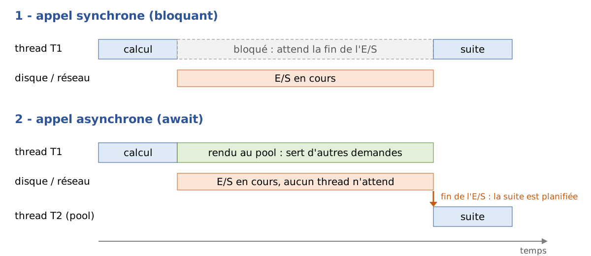

9. Asynchronous Programming
The previous chapter introduced threads: we can execute multiple pieces of code “at the same time,” synchronize them, and assign tasks to the thread pool. This chapter, which was not included in the 2008 course, addresses a related but distinct issue: how to write a program that waits a long time (for the disk, the network, or a database) without blocking threads during these waits. The answer in .NET lies in two keywords of the C# language, [async] and [await], and in one type, [Task]. They are everywhere today: the following chapters will use them to access databases ([OpenAsync], [ExecuteReaderAsync], [ToListAsync], [SaveChangesAsync]), to write TCP servers ([AcceptTcpClientAsync]), web clients ([HttpClient]), and web services using ASP.NET Core.
All examples in this chapter are single-file applications ([async-01.cs], [async-02.cs]…) that are run using [dotnet run async-NN.cs] in the [09-async] folder. Many of them measure durations using a stopwatch ([Stopwatch]): the milliseconds displayed vary from one run to another and from one machine to another (the examples were run on a dual-processor machine). It’s the orders of magnitude that matter: 1 second or 3 seconds, 300 ms or 0 ms.
9.1. Why Asynchrony
9.1.1. Operations that wait
A program performs two types of work:
- computational tasks, which occupy the processor: sorting a list, calculating a tax, analyzing a text;
- input/output (I/O), which essentially consists of waiting for a peripheral device: reading a file from disk, sending a request to a web server and waiting for its response, executing a SQL query on a database server.
The orders of magnitude are very different. A processor executes a few billion instructions per second. A read operation on a disk (SSD) takes on the order of one-tenth of a millisecond; a round trip over a local network takes a fraction of a millisecond; a round trip to a server located on the other side of the country takes a few tens of milliseconds; and a somewhat complex SQL request can sometimes take several seconds. During these waits, the processor could have executed millions of instructions.
When a program reads a line over a network connection using a synchronous (blocking) method, the thread performing this read is blocked: it does nothing, but it still exists. It occupies memory (its stack, on the order of a megabyte), it is recognized by the operating system, and, most importantly, it is no longer available to do anything else. This isn’t a problem in a small console program that does one thing at a time. It’s much more of an issue in two situations:
- on a server: each client served by a blocked thread ties up that thread. The 2008 course already explained this in the conclusion of its discussion of the asynchronous TCP client: if the thread pool has N threads and all N threads are performing a blocking operation, there are no threads left available for a new client. A modern web server handles thousands of simultaneous requests with just a few dozen threads: this is possible because its threads never get blocked on I/O;
- in a graphical user interface: a single thread—the UI thread—handles clicks and redraws windows. If it is blocked by a download, the window freezes.
Asynchrony involves initiating the I/O operation, freeing up the thread while it runs (the hardware and operating system do not need it to transfer data), and then resuming work once the operation is complete, possibly on a different thread:

- In [1], the thread T1 initiates the I/O and remains blocked until it finishes;
- in [2], the thread T1 initiates the I/O and returns to the thread pool, where it can handle other requests. When the I/O operation completes, the system notifies NET, which has a thread from the pool—T2 (or T1, if it is available)—execute the rest of the processing.
The [async-01.cs] program measures the difference over 100 operations, each of which waits for one second (the wait simulates I/O). It uses instructions that we will explain later in this chapter ([Task.Run], [Task.Delay], [await]); here, we are only interested in the results.
Results:
Comments:
- Lines 8–21: The solution from the 2008 course, one thread per operation. Each thread executes [Thread.Sleep(1000)]: it is blocked for one second. The 100 waits occur simultaneously, and the entire process takes exactly one second (line 4), but at the cost of 100 additional threads: the process now has more than 100 threads (line 3). With 10,000 operations, 10,000 threads would be required;
- lines 23–31: the operations are delegated to the thread pool ([Task.Run]), which was introduced in the previous chapter. The pool starts with as many threads as there are processors (2 in this case) and adds more only gradually when they are all busy, since it assumes that its threads are performing computations and that there is no need to have many more than there are processors. But here, its threads are not computing: they are idle. The operations wait for a free thread, and the whole process takes… more than twenty seconds (line 6). This is known as “thread pool starvation,” the most common flaw in servers that combine thread pools with blocking I/O;
- lines 34–41: the waits are asynchronous ([Task.Delay] instead of [Thread.Sleep]). No thread is blocked during the wait: a system timer will wake up .NET after one second. The entire process lasts one second, and the number of threads does not increase (the threads displayed on line 7 are those that the pool created during step 2; they are idle);
- line 51: [Process.GetCurrentProcess()] provides access to the currently running process; its property [Threads] is the collection of its threads (those of .NET and those of the system).
Let’s remember the lesson: to wait, you must not block a thread. Asynchrony does not make I/O faster; it allows you to handle many I/O operations simultaneously with few threads, and to keep the threads the application needs available (the GUI thread, the threads in a server’s pool).
9.1.2. Three Successive Models
.NET proposed three ways to write asynchronous code. The first two are still encountered in legacy code and older articles, so it’s useful to recognize them.
Model | Origin | Principle |
APM (“Asynchronous Programming Model”) | .NET 1.0 (2002) | a pair of methods: [BeginXxx] and [EndXxx]. [BeginXxx] initiates the operation and receives a callback method ([AsyncCallback]); the callback method, executed by a thread from the pool at the end of the operation, calls [EndXxx] to retrieve the result or exception. Example: [Socket.BeginConnect] / [EndConnect], used by the asynchronous client TCP from the 2008 course. |
EAP (“Event-based Asynchronous Pattern”) | .NET 2.0 (2005) | a [XxxAsync] method that initiates the operation and a [XxxCompleted] event triggered upon its completion. Examples: [WebClient.DownloadStringAsync] and [DownloadStringCompleted], the [BackgroundWorker] class (events [DoWork], [ProgressChanged], [RunWorkerCompleted]) studied in the 2008 course. |
TAP (“Task-based Asynchronous Pattern”) | .NET 4.0 (2010), C# 5 (2012) | a method [XxxAsync] that returns a task ([Task] or [Task<T>]) representing the current operation. The calling code waits for the task using the keyword [await]. This is the current model, the only one used in the rest of the course. |
The APM and EAP patterns share the same flaw: the code is broken up into pieces. What naturally reads as “connect, then read, then display” becomes a method that initiates the connection, a callback method that starts reading, and another callback method that displays the data; variables must be shared among these methods, exceptions are handled in different places, and a simple loop (“read as long as there is data”) becomes a callback method that recursively calls itself, like the [lecture] method from the 2008 course. The TAP pattern, along with [async] and [await], allows you to write asynchronous code that takes the form of synchronous code.
The program [async-02.cs] writes the same client, TCP, according to the two extreme models, APM and TAP. It also contains a small server, run by a thread, that responds to two clients (network programming will be covered in detail in Chapter 12; for now, it suffices to know that a client connects to the server and reads the message the server sends it).
Results:
Comments:
- lines 8–21: the server. It listens on port 27500 of the local machine ([IPAddress.Loopback], i.e., 127.0.0.1), accepts two connections one after the other, and sends each client a welcome message after half a second;
- lines 24–54: The client writes according to the APM pattern, as in the 2008 course:
- line 29: [BeginConnect] initiates the connection and immediately yields control (line 3 of the results). Its last two parameters are the callback method to be invoked at the end of the connection, [Connecte], and an arbitrary object that the callback method will find in the [AsyncState] property of its [IAsyncResult] parameter: in this case, the socket itself;
- line 32: the main thread has nothing left to do. To prevent the program from terminating before the exchange is complete, it waits for a signal that will be sent by the last callback method: a [ManualResetEventSlim] object, whose [Wait] method blocks the thread that calls it until another thread calls its [Set] method (this is a lightweight version of the [AutoResetEvent] barriers seen with threads);
- lines 35–43: the connection callback method. It must call [EndConnect] with the received parameter: this call terminates the operation and would throw an exception if the connection had failed. It then initiates the read operation with [BeginReceive], specifying a second callback method, [Recu];
- lines 47–54: the read callback retrieves the number of bytes received using [EndReceive], displays the message, closes the socket, and releases the main thread;
- the results show that the callback methods are executed by a thread other than the main thread (a thread from the pool, not thread 1);
- lines 57–65: the same client using the TAP template. [ConnectAsync] and [ReceiveAsync] return tasks, and [await] waits for them to finish without blocking the thread: The code reads from top to bottom like synchronous code; the variables are ordinary local variables; there are no callback methods or signals to manage. The thread executing the rest of the code is generally no longer Thread 1: we’ll explain why in the section “Which thread executes the rest?”;
- Line 68: Each display is prefixed with the number of the thread executing it, [Environment.CurrentManagedThreadId].
It is not necessary to remember the pattern APM. If you need to use an older library that only provides this pattern, the method [Task.Factory.FromAsync] converts a pair [BeginXxx] / [EndXxx] into a method that returns a [Task]; and we will see in the section on [TaskCompletionSource] how to convert an event-based API (EAP model) into a task.
9.2. Tasks: Task and Task<T>
A task is an object that represents an ongoing or completed operation:
- [Task] represents an operation that does not return a result;
- [Task<T>] represents an operation that will return a result of type [T]. [Task<T>] derives from [Task].
A task is not a thread. A task can be executed by a thread from the pool (as is the case with tasks created by [Task.Run]), but many tasks are not executed by any thread: the task returned by [Task.Delay(1000)] is simply “completed” by a timer after one second; the task returned by [ReceiveAsync] is completed when the system signals that data has arrived. A task is a promise of a result, which can be queried (is it finished? was it successful?) and waited for.
The program [async-03.cs] demonstrates the main ways to create and wait for a task:
Results:
Comments:
- Lines 4–12: [Task.Run] assigns a function to the thread pool and immediately returns a task representing its execution. The function returns a [long], so the task is of type [Task<long>]. [Task.Run] is the tool for the calculations to be executed in the background; it must not be used to “make asynchronous” a blocking I/O operation (which is what step 2 of [async-01.cs] did);
- Line 14: The [Status] property returns the task’s status. Immediately after it is launched, the task waits here for a thread from the pool to take it on ([WaitingToRun]); depending on the machine’s load, you might also see [Running] (running);
- Line 16: [await tache1] waits for the task to finish without blocking the thread and returns its result, which in this case is of type [long]. The expression [await t] is of type [T] if [t] is of type [Task<T>], and has no value if [t] is of type [Task];
- Line 20: [Task.Delay(300)] returns a task that will complete in 300 ms. No thread is occupied during this time. This is the asynchronous equivalent of [Thread.Sleep(300)]. Its status, [WaitingForActivation], means “waiting for an external event”;
- lines 26–27: [Task.FromResult(42)] returns a task that has already completed with a result of 42, while [Task.CompletedTask] returns a task that has already completed with no result. These are used when a method needs to return a task but already has the result (a cached value, for example);
- lines 31–36: A task whose function throws an exception ends with the status [Faulted]. The exception is retained within the task, and [await] rethrows it; it is caught using a standard [try / catch];
- lines 42–48: [Wait()] waits for the task to finish by blocking the current thread, and the [Result] property returns the result of a [Task<T>] while also blocking the thread if the task has not finished. These are the thread-waiting forms from the previous chapter ([Join]). They should be avoided: they have all the drawbacks of blocking I/O, wrap exceptions in a
*[AggregateException]*(line 56), and can cause a deadlock in a graphical application. They should be reserved for the rare cases where you know the task has already completed; - Line 51: [ContinueWith] attaches a continuation—a function that will be executed when the task is complete—to a task. The continuation receives the completed task and returns an integer here: this results in a new task, [Task<int>]. This is how asynchronous code was written with .NET 4.0, prior to [await]; [await] is based on a similar mechanism (registering a sequence to be executed at the end of the task), implemented by the compiler in a safer way. [ContinueWith] is hardly ever used directly anymore;
- lines 54–56: the Boolean properties [IsCompleted] (terminated, regardless of how), [IsCompletedSuccessfully] (terminated successfully), [IsFaulted] (terminated on an exception), [IsCanceled] (canceled), and the property [Exception], of type [AggregateException], which contains the task’s exception(s).
The possible values for the [Status] property (enumeration [TaskStatus]) are as follows:
Status | Meaning |
[Created] | The task was created by a constructor and has not yet been started (tasks are rarely created via [new Task(...)]) |
[WaitingForActivation] | The task is waiting for an external event: the end of a timeout, an I/O operation, or another task |
[WaitingToRun] | The task is waiting for a thread from the pool to become available |
[Running] | The task is currently being executed by a thread |
[WaitingForChildrenToComplete] | The task is complete but is waiting for attached "child" tasks (rare case) |
[RanToCompletion] | The task has completed successfully |
[Faulted] | The task terminated due to an uncaught exception |
[Canceled] | The task was canceled (see the section on cancellation) |
The last three statuses are final states: a completed task no longer changes state.
9.3. Asynchronous methods: async and await
9.3.1. Writing an asynchronous method
A method that contains [await] must be declared with the [async] modifier. It returns:
- [Task] if it does not return a result (the equivalent of [void]);
- [Task<T>] if it returns a result of type [T]: within the method, you write [return valeur;] with a value of type [T], and the compiler wraps it in the task.
By convention, the name of a method that returns a task ends with [Async]: [ReadAllTextAsync], [ConnectAsync], [PreparerCafeAsync].
The program [async-04.cs] makes coffee and counts sugar cubes:
Results:
Comments:
- Lines 17–25: an asynchronous method with no return value. It executes normally, synchronously, until it encounters its first [await] on an unfinished task (line 21). At that point, it returns control to its caller, passing back an unfinished task that represents it; this is why line 4 of the results appears immediately after line 3, rather than a second later;
- line 23: when the one-second timeout has elapsed, the method resumes execution immediately after the [await], with its local variables intact, until the next [await] or until it terminates. When it ends, the task returned to the caller transitions to the [RanToCompletion] state;
- lines 29–37: an asynchronous method that returns an integer: its return type is [Task<int>], but the [return] instruction returns a [int];
- lines 6–9: The main program calls both methods without waiting for them. It retrieves two tasks and continues execution. The two methods then proceed “simultaneously”: the sugar is counted (lines 7–9) while the machine heats up;
- lines 12–13: The main program waits for both tasks. The coffee is ready after 1.5 seconds—the duration of the longer of the two operations—and not after 2.1 seconds (1.5 + 3 × 0.2).
It is important to note that [async] does not make a method asynchronous: it merely allows the use of [await] within the method. A [async] method that does not wait for any unfinished tasks executes entirely synchronously (the compiler, in fact, issues a warning for a [async] method that contains no [await]). It is the expected operations ([Task.Delay], asynchronous I/O) that are actually asynchronous.
9.3.2. What the compiler does
How can a method be interrupted in the middle of a loop, yield control, and then resume later at the same point with the same local variable values? The compiler transforms the method [async] into a state machine: a class (a structure in the optimized version of the program, compiled in “Release” mode) whose fields are the method’s local variables and a state number that indicates where to resume. For the method [CompterSucresAsync], the generated code looks something like this:
This follows the same principle as the callback methods in the APM model ([OnCompleted(Avancer)] requests a callback at the end of the operation), but it is the compiler that splits the method, saves the variables, and handles exceptions. The developer, on the other hand, writes a method that reads from top to bottom. You can view the actual generated code using a decompiler such as ILSpy or on the SharpLab website; it is significantly longer, particularly because it handles the case where the expected task has already completed (in which case execution continues without interruption) and the case of exceptions.
9.3.3. Which thread executes the rest of the code?
The program [async-05.cs] displays the thread number executing each piece of code:
Results:
Comments:
- line 3: [SynchronizationContext.Current] is the synchronization context of the current thread. In a console program, there is none (value [null]); we will see in the section on [ConfigureAwait] the role it plays in graphical user interfaces;
- line 6: waiting for a task that has already completed does not suspend the method: execution continues immediately on the same thread (thread 1, line 4);
- Lines 10–13: After waiting for an unfinished task, and in the absence of a synchronization context, the remainder of the method is executed by any thread from the pool. Thread 1, the main program’s thread, is no longer used: during the wait, it had nothing to do. Therefore, in an asynchronous method, one should never assume that the code following a
*[await]* is executed by the same thread as the code preceding it; - Lines 17–19: Two calls to the [TravaillerAsync] method proceed simultaneously. The six code blocks are executed by one or two threads from the pool (this varies from one execution to another), which switch between A and B as waiting occurs: while one waits, the other works. No thread is assigned to A or B, and none is blocked during waiting periods;
- line 20: [ThreadPool.ThreadCount] returns the number of threads currently created by the pool: only a few.
This method of performing multiple operations simultaneously without increasing the number of threads is called concurrency. It differs from parallelism, which involves executing multiple computations at the same time across multiple processors (as discussed in the previous chapter: [Parallel.For], [Task.Run]). Asynchrony facilitates I/O concurrency; it does not make calculations faster.
9.3.4. The Asynchronous Main Program
The previous programs use [await] directly in high-level statements. This has been possible since C# 9: when high-level statements contain a [await], the compiler generates an asynchronous [Main] method with the signature [static async Task Main(string[] args)] (or [Task<int>] if the program uses [return entier;]).
You can also write this method explicitly, which has been possible since C# 7.1. This is what the program [async-06.cs] does:
Results, first with and then without an argument:
Comments:
- Line 7: The [Main] method is asynchronous and returns a [Task<int>]. The integer is the program’s exit code (0 for success, any other value for an error), which can be checked by a script ([echo $?] on Linux, [echo %ERRORLEVEL%] on Windows);
- line 10: the argument is the number of seconds for the countdown. It is passed after [--] in the [dotnet run async-06.cs -- 3] command;
- line 18: a one-second wait, without blocking any threads.
When [Main] is asynchronous, the runtime calls it, retrieves the returned task, and waits for it to finish before terminating the program. This is the only place where a blocking wait is performed, by .NET itself.
9.4. Sequential Execution and Concurrent Execution
9.4.1. Task.WhenAll
The coffee example demonstrated this: the moment an asynchronous operation is initiated and the moment it is awaited can be different. Writing [await MethodeAsync()] initiates the operation and awaits it immediately; writing [var t = MethodeAsync();] and then, later, [await t;] allows other operations to be launched in between. The program [async-07.cs] compares the two approaches using three one-second operations:
Results:
Comments:
- lines 7–9: Each operation is started and then waited for before starting the next one. The code does not block any threads, but the three operations are performed one after the other: 3 seconds (line 2). This is the correct approach when one operation requires the result of the previous one;
- lines 14–16: The three operations are started without waiting for each other. They run simultaneously;
- line 17: [Task.WhenAll] returns a task that completes when all tasks passed to it are finished. We wait for it using [await]: 1 second instead of 3 (line 3);
- line 18: The three tasks are complete, so the [Result] property returns their result without blocking. We could also have written [await ta], which immediately returns the result of a completed task;
- line 23: when passed a collection of [Task<T>], [Task.WhenAll] returns a [Task<T[]>] whose result is the array of results, in the order of the tasks (not in the order in which they completed). The expression [villes.Select(LireTemperatureAsync)] from LINQ calls the method for each city, thereby producing six tasks launched simultaneously. The six operations together take one second.
[Task.WhenAll] is the asynchronous equivalent of [Task.WaitAll] (used in [async-01.cs]), which waits for all tasks by blocking the current thread.
9.4.2. Task.WhenAny
[Task.WhenAny] returns a task that terminates as soon as any of the tasks passed to it is completed; its result is that first completed task. The program [async-08.cs] uses it in two ways:
Results:
Comments:
- lines 7–11: Three mirror servers are queried; they all hold the same information but respond at varying speeds. The three tasks are stored in an array, initialized with a collection expression;
- line 14: [await Task.WhenAny(requetes)] returns the first completed task, of type [Task<string>]. To obtain its result, we wait for it in turn (line 15): it is complete, so [await] immediately returns the string. The first response arrives after 300 ms (line 2);
- line 17: the other requests are not halted by [WhenAny]; they continue until they finish. To stop them, they would need to be canceled, which we’ll cover in the section on cancellation. Here, we wait for them to display all the responses;
- lines 22–24: a classic use of [WhenAny]: limiting the duration of a wait by creating a “race” between the operation and a timeout. If the timeout wins, the operation took too long. NET now offers a more direct way to handle this case: the [WaitAsync] method, which is discussed later.
9.4.3. Task.WhenEach
We often want to process the results of multiple operations as they finish, without waiting for the slowest one. Before .NET 9, we wrote a loop for this that called [Task.WhenAny], processed the resulting task, and removed it from the list. .NET 9 introduced the [Task.WhenEach] method, which returns tasks in the order they complete, in the form of an asynchronous stream that is iterated over using [await foreach] (asynchronous streams are discussed later in this chapter).
The program [async-09.cs] processes five “files,” each of which takes between 100 and 900 ms to process:
Results:
Comments:
- line 7: the five processes are launched. The [Select] method of LINQ provides the function with the element and its index ([(duree, i)]);
- Lines 10–12: [Task.WhenEach(taches)] submits each task as soon as it is completed: file 3 (100 ms) first, file 0 (900 ms) last. The loop [await foreach] waits for the next task without blocking any threads. Each delivered task is complete: [await tache] returns its result immediately;
- the entire process takes 900 ms—the duration of the longest processing step—and each result is displayed as soon as possible.
9.5. Exceptions in Asynchronous Code
9.5.1. Propagation via await
An exception thrown in an asynchronous method is not propagated to the caller at the time of the call: it is stored in the task, which transitions to the [Faulted] state. It is the [await] instruction that rethrows it. The program [async-10.cs] examines the various cases:
Results:
Comments:
- Lines 63–69: the method being tested. It first checks its parameter ([ArgumentException.ThrowIfNullOrWhiteSpace] triggers a [ArgumentException] if the string is [null], empty, or blank), waits 100 ms, then converts the entire string, which throws a [FormatException] if the string is not a number;
- lines 3–11: the standard case. The exception thrown by [int.Parse] after the method’s [await] is rethrown by the caller’s [await]: a [try / catch] surrounding the [await] intercepts it, exactly as in a synchronous call. This is the major simplification introduced by [await]: with the APM model, the exception was rethrown by [EndXxx], within the callback method, far from the code that had initiated the operation;
- lines 16–24: here, the exception is thrown even before the first
*[await]in the method. However, the call does not trigger anything: the [async] method returns a task that has already failed (status [Faulted], line 3), and it is the [await] that throws the exception. A method named [async] never* throws an exception when called; - lines 28–32: [Task.WhenAll] waits for four tasks, two of which fail. The task [toutes] then fails as well and contains both exceptions. But [await] rethrows only one of them, the first one (line 5): the language designers chose to retain the usual form of [catch] (intercepting a [FormatException], not a wrapper);
- lines 39–43: to view all exceptions, consult the [Exception] property of the [toutes] task. It is of type [AggregateException], an exception that contains other exceptions, accessible via its property [InnerExceptions];
- lines 46–48: The failure of [WhenAll] does not prevent the other tasks from succeeding; their results are available;
- lines 52–59: the blocking forms ([Result], [Wait()]) do not rethrow the exception itself but rather a [AggregateException] that contains it. This is another reason to prefer [await] over them.
9.5.2. async void: to be avoided
A [async] method can also be declared as [void]. In that case, it does not return any task, which has two serious consequences: the caller cannot know when it finishes (it cannot wait for it), and it cannot catch its exceptions. An uncaught exception in a [async void] method is rethrown on a thread in the pool, where no one can catch it: it terminates the program. The program [async-11.cs] demonstrates this:
Results:
Comments:
- Lines 4–9: The [AppDomain.CurrentDomain.UnhandledException] event is triggered when an exception is not caught anywhere, just before the system terminates the process. Its handler cannot prevent this termination; we use it here to display a custom message (instead of the stack trace that .NET would display) and then terminate the process ourselves with [Environment.Exit(1)];
- lines 15–19: The method [EnregistrerAsync] returns a [Task]: its exception is intercepted normally;
- lines 25–26: the method [Enregistrer], declared as [async void], returns control to its first [await]; [try] terminates without having encountered anything. 200 ms later, the method throws its exception on a thread in the pool: the program is halted in the middle of execution (lines 4–7), and line [fin normale du programme] is never displayed.
The rule is therefore: an asynchronous method always returns [Task] or [Task<T>], never [void]. The only exception is a GUI event handler (such as a button click): the signature of event handlers requires [void], so we write [private async void BoutonCalculer_Click(object sender, EventArgs e)]. In this case, all exceptions are caught within the handler using [try / catch].
A related error involves calling a method that returns a task without waiting for it ([EnregistrerAsync("c");] without [await]): the compiler flags this with a warning (CS4014) because any exception thrown by the task would be lost. If you really want to launch a task without waiting for it (“fire-and-forget”), you must explicitly specify the ignored element [_]: [_ = EnregistrerAsync("c");], and the method must then handle its own exceptions.
9.6. Cancellation and Timeouts
9.6.1. CancellationTokenSource and CancellationToken
A long-running asynchronous operation must be cancellable: the user clicked on [Annuler], a web server client disconnected, the application shut down, or a timeout was exceeded. NET uses a cooperative mechanism involving two objects for this purpose:
- a [CancellationTokenSource] (cancel source), held by the code that decides to cancel. Its [Cancel()] method requests cancellation; [CancelAfter(délai)] automatically requests it after a timeout;
- a [CancellationToken] (cancel token), obtained via the source’s [Token] property and passed as a parameter to cancelable operations. The operation checks the token ([IsCancellationRequested]) or requests that it throw an exception if a rollback has been requested ([ThrowIfCancellationRequested()]), and passes it on to the operations it calls.
The mechanism is cooperative: no one forcibly interrupts an operation (the [Thread.Abort] method from the 2008 course is obsolete in the current .NET: it simply throws a [PlatformNotSupportedException]); the operation stops on its own, at a point where it can do so cleanly. By convention, a canceled operation ends by launching a [OperationCanceledException], and its task has the status [Canceled].
The program [async-12.cs] cancels a simulated download in three ways:
Results:
Comments:
- Lines 56–62: The simulated download receives a block every 300 ms. It receives a [CancellationToken] as the last parameter (this is the convention) and passes it to [Task.Delay] (line 61): if cancellation is requested while waiting, the wait is immediately interrupted and a [TaskCanceledException]—a class derived from [OperationCanceledException]—is launched. Almost all of the asynchronous methods of .NET accept a token: [ReadAllTextAsync], [ConnectAsync], [ToListAsync]…;
- Lines 6–17: The source is created in a [using] because it uses a timer that must be released. [CancelAfter] requests cancellation after 1.2 seconds: the download receives three blocks and then stops at 1,200 ms (line 5). We intercept [OperationCanceledException], the base class, which handles all cancellations;
- lines 21–33: a synchronous calculation (not a wait) that can be canceled. The method [Calculer] (lines 67–79) checks the token every million iterations using [ThrowIfCancellationRequested()], which launches a [OperationCanceledException] if an abort has been requested. The calculation is delegated to the pool by [Task.Run], to which the token is also passed: the task then ends with status [Canceled] rather than [Faulted] (line 6). Here, the source is created with a delay (constructor [CancellationTokenSource(TimeSpan)]), which is equivalent to [CancelAfter];
- lines 37–51: The source is explicitly canceled by [Cancel()] after 700 ms. The cancellation is immediate: the wait for the third block is interrupted (lines 9–10).
9.6.2. The example BackgroundWorker rewrites
The 2008 course presented the class [BackgroundWorker] with an example of five processes lasting 1 to 5 seconds, of which No. 3 threw an exception and No. 4 was canceled. You had to subscribe methods to the events [DoWork] and [RunWorkerCompleted], enable cancellation ([WorkerSupportsCancellation]), test [CancellationPending] in the work loop, and populate the [Result] and [Cancel] properties of the event argument; and the course noted that in the event of an exception or cancellation, it was impossible to determine which process was affected. [BackgroundWorker] still exists within .NET, but it is designed for Windows Forms graphical user interfaces and no longer serves a purpose: tasks accomplish the same thing more simply. The program [async-13.cs] rewrites this example:
Results:
Comments:
- Lines 33–46: the processing. No. 3 throws an exception; the others “sleep” for [duree] seconds in one-second increments, with a cancelable [Task.Delay], and return a result—a [record]—that contains the scheduled duration and the actual duration. [Stopwatch.GetTimestamp()] and [Stopwatch.GetElapsedTime(debut)] measure a duration without creating a [Stopwatch] object;
- lines 8–15: The five processes are launched. Only process No. 4 receives the token from the cancellation source; the others receive [CancellationToken.None], a token that will never be canceled. Process No. 4 is canceled after 2.5 seconds, even though it still has 2.5 seconds left to sleep;
- lines 19–29: With [Task.WhenEach], each process is processed as soon as it finishes, regardless of how it ended: we do not use [await tache], which would trigger the exception, but instead check its status using the expression [switch]. The job number is retrieved based on its position in the task table ([Array.IndexOf]): the problem reported in the 2008 course is resolved;
- the results show that No. 3 fails immediately, that Nos. 0, 1, and 2 complete after 1, 2, and 3 seconds, respectively, and that No. 4 is canceled at 2.5 seconds.
9.6.3. Limiting the duration of a wait
The program [async-14.cs] provides two complementary tools: the method [WaitAsync] and the associated cancellation sources.
Results:
Comments:
- Line 10: [t.WaitAsync(TimeSpan)] (.NET 6) returns a task that completes as [t] if [t] completes within the time limit, and fails with a [TimeoutException] otherwise. This is the direct implementation of the “race” with [Task.WhenAny] from the program [async-08.cs]. Another overload, [WaitAsync(CancellationToken)], allows you to stop waiting for a task that does not accept a token;
- Line 18: [WaitAsync] aborts the wait, not the operation. The operation continues (status [WaitingForActivation]); it consumes resources, and its result will be lost;
- Lines 20–31: To truly stop the operation, you must pass it a canceled token at the end of the timeout period. The operation ends after 1 second with status [Canceled]. This is the preferred solution whenever the operation accepts a token;
- lines 44–59: A process may be canceled for several reasons; here, it is due to its own timeout and a general stop request from the caller. [CancellationTokenSource.CreateLinkedTokenSource(arret)] creates a linked source: it is canceled if the token [arret] is canceled, and it can also be canceled on its own, in this case using [CancelAfter(delai)]. To determine which of the two causes occurred, an exception filter [when] (line 53) is used: the first [catch] is retained only if the caller requested the termination;
- Lines 38–41: three processing steps and a general stop requested at 1,200 ms. The [rapide] process completes normally; the [lent] process exceeds its one-second time limit; the [moyen] process, which was allotted two seconds, is terminated by the general termination.
9.7. Reporting Progress: IProgress<T>
A long-running operation often needs to report its progress (a progress bar, a percentage). With [BackgroundWorker], the process called [ReportProgress], and the interface subscribed to the [ProgressChanged] event. With tasks, the [IProgress<T>] interface is used, which has only one method:
The operation receives a [IProgress<T>] object as a parameter and passes its reports to it via [Report]; it is unaware of how they will be displayed. .NET provides the implementation [Progress<T>], intended for graphical user interfaces: it stores the synchronization context of the thread that creates it (the UI thread) and executes the report processing there, which allows the graphical components to be updated without having to worry about threads. The 2008 course was supposed to call [Invoke] on the graphical components using a delegate to achieve the same result. In a console program, which has no synchronization context, [Progress<T>] has the reports processed by threads from the pool, without guaranteeing their order: the program [async-15.cs] therefore uses its own implementation of [IProgress<T>]. It simulates a file copy that the user can cancel by typing [Entrée]:
Results without cancellation:
Results when the user enters [Entrée] during the copy operation, after one and a half seconds:
Comments:
- Lines 24–33: The operation receives a [IProgress<Avancement>] and a cancellation token. After each file, it reports its progress via a [Avancement] object (a [record] containing the percentage and the file name). The parameter is declared as nullable ([IProgress<Avancement>?]) and used with the [?.] operator: a caller who does not want reports passes [null];
- lines 40–46: the console implementation of [IProgress<Avancement>] displays a 20-character bar;
- lines 4–7: A task in the pool waits for the user to type [Entrée] ([Console.ReadLine] is a blocking read, hence [Task.Run]: it is a thread in the pool that is blocked, not the program) and then requests cancellation. The program does not wait for it, hence the ignored entry [_]: at the end of the program, this task is abandoned;
- lines 15–20: the program initiates the copy and waits for it. A cancellation results in a [OperationCanceledException].
9.8. Asynchronous Input/Output
I/O is the very essence of asynchrony. The classes in .NET provide an asynchronous version of all their I/O methods: files ([File], [FileStream], [StreamReader], [StreamWriter]), network ([Socket], [TcpClient], [NetworkStream], [HttpClient], as discussed in Chapter 12), databases (ADO.NET and Entity Framework Core, Chapters 10 and 11). The program [async-16.cs] demonstrates asynchronous file I/O by reading the tax bracket file from the example directory, [DataImpot.txt], located in the program folder:
Each line contains the bracket threshold, the coefficient [coeffR], and the coefficient [coeffN], separated by the character [:] and written with a decimal point (the tax scale is the 2004 scale for 2003 income, retained as-is for this exercise). The program runs in the [09-async] folder and searches for its files in the current folder.
Results:
Comments:
- Line 8: [File.ReadAllLinesAsync] reads the entire file and returns a [Task<string[]>]. The read and write methods of the [File] class have asynchronous versions: [ReadAllTextAsync], [ReadAllBytesAsync], [WriteAllTextAsync], [WriteAllLinesAsync], [AppendAllTextAsync]… They all accept a cancellation token as the last parameter;
- lines 13–19: line-by-line reading using a [StreamReader]. [ReadLineAsync] returns a [Task<string?>], which results in [null] at the end of the file. Each line is converted to [TrancheImpot] by the [Parse] method (lines 55–60), which reads the numbers in culture-invariant format so that the decimal point is recognized on a French machine;
- lines 26–28: [File.ReadLinesAsync] (.NET 7) returns an asynchronous stream of lines ([IAsyncEnumerable<string>]), which is traversed using [await foreach]. Unlike [ReadAllLinesAsync], it does not load the entire file into memory: it reads the lines on demand. This is the preferred method for large files;
- lines 33–39: writing using a [StreamWriter] and its method [WriteLineAsync]. [StreamWriter] is declared with [await using] (C# 8): upon exiting the block, it is released by its method [DisposeAsync], which flushes its buffer asynchronously. [await using] is used with objects that implement the [IAsyncDisposable] interface ([StreamWriter], [FileStream], database connections, etc.); [StreamReader], which performs only a single read, implements only [IDisposable] and uses a standard [using];
- line 36: the loop iterates over tuples (slice, number) produced by [Select] and deconstructs them;
- Lines 44–50: [ReadAllTextAsync] re-reads the written file, [AppendAllTextAsync] adds a line to it, and then the file is deleted. [File.Delete] has no asynchronous version: deleting a file is a very short operation.
Note: On Windows, a [FileStream] opened without any specific options performs its asynchronous operations by delegating synchronous reads to the thread pool; for true asynchronous system I/O, open it with the [FileOptions.Asynchronous] option (or [useAsync: true]). The methods of the [File] class handle this automatically. For local files, the difference is rarely noticeable; it is noticeable for network operations, where asynchronous I/O is always true asynchronous I/O.
9.9. Asynchronous streams: IAsyncEnumerable<T>
An asynchronous method returns a result after a certain amount of time. An iterator (a method that returns a [IEnumerable<T>] with [yield return]) returns a sequence of results, produced on demand. Asynchronous streams (C# 8) combine both: a sequence of values, each of which may require an asynchronous wait before being produced. They are used to read lines from a large file, the rows of a query result SQL, messages arriving over a network connection, sensor measurements, and so on…
- the type is [IAsyncEnumerable<T>];
- it is produced using a method [async], which returns [IAsyncEnumerable<T>] and contains both [await] and [yield return];
- it is consumed by [await foreach].
We have already encountered two of them: [Task.WhenEach] and [File.ReadLinesAsync]. The program [async-17.cs] writes one:
Results:
Comments:
- Lines 48–64: the producer. It waits 200 ms ([await]) and then delivers a measurement ([yield return]), and so on. For each [yield return], it pauses until the consumer requests the next value. The [finally] block is executed when the producer stops, regardless of the reason;
- line 49: the cancellation token for an asynchronous stream is a parameter marked with the attribute [[EnumeratorCancellation]] (namespace [System.Runtime.CompilerServices]). It is set to [default] (a token that is never canceled) if the caller does not provide one;
- lines 7–10: The loop [await foreach] waits for each measure without blocking a thread and processes it as soon as it is produced: one every 200 ms (lines 2–6);
- lines 13–20: When the consumer exits the loop via [break], the stream is released (method [DisposeAsync], called by [await foreach]): the producer does not produce the remaining 96 measurements and executes its [finally] block (line 11);
- lines 24–36: the extension method [WithCancellation] passes a token to the parameter marked [[EnumeratorCancellation]]. The token is canceled after 700 ms: the wait for the 4th measure is interrupted; a [OperationCanceledException] passes through the producer (which executes its [finally]) and then through the consumer’s [await foreach] loop;
- Lines 41–44: .NET 10 incorporates LINQ for asynchronous streams (class [System.Linq.AsyncEnumerable], previously available in the NuGet and [System.Linq.Async] packages): [Where], [Select], [Take], [FirstAsync], [ToListAsync]… apply to a [IAsyncEnumerable<T>]. Methods that produce a stream ([Where], [Select]) return another stream; those that produce a value ([ToListAsync], [CountAsync], [FirstAsync]) return a task that is pending;
- Line 76: The method [ToString] of [record] and [Mesure] is redefined for a more compact display.
9.10. ValueTask, ConfigureAwait, and TaskCompletionSource
9.10.1. ValueTask<T>
A task is an object: each call to a method that returns a [Task<T>] (generally) allocates an object on the heap, which the garbage collector will have to reclaim. This is negligible for I/O that lasts milliseconds, but not for a method called millions of times per second that, most of the time, already has the result (a cache, a pre-filled buffer). For this case, .NET offers the [ValueTask<T>] structure (C# 7, 2017): it contains either the result directly (no allocation) or a true task when the operation is truly asynchronous. The program [async-18.cs] uses it for a cached exchange rate service:
Results:
Comments:
- Lines 21–30: The method is not [async]. If the rate is in the cache, it returns a [ValueTask<decimal>] that directly contains the result ([ValueTask.FromResult]): no object is created. Otherwise, it wraps the task of the [async] method—which queries the server—in a [ValueTask<decimal>];
- lines 33–45: the simulated server query (300 ms), which stores the result in the cache. A method [async] can also directly return a [ValueTask<T>];
- line 9: for the caller, nothing changes: it waits for the [ValueTask] with [await]. The results show the 3 server accesses (300 ms each) and the 4 immediate responses from the cache.
[ValueTask<T>] has constraints: it must be waited for only once (no two [await] on the same [ValueTask], no simultaneous waiting from multiple locations), and it cannot be passed directly to [Task.WhenAll]: it must first be converted to a task using [AsTask()]. The rule of thumb is simple: use [Task] and [Task<T>] by default, and [ValueTask] only in code that has been measured to be heavily loaded and often synchronous. You’ll mostly encounter [ValueTask] as the return type for methods of .NET: [Stream.ReadAsync(Memory<byte>)], [DisposeAsync], [ChannelWriter.WriteAsync]…
9.10.2. ConfigureAwait and the synchronization context
The [async-05.cs] program demonstrated that, in the console, the remainder of a method following a [await] is executed by any thread in the pool. This is not the case in a graphical application (Windows Forms, WPF, MAUI). A graphical component can only be manipulated by the UI thread: the 2008 course had to use [listBoxEvts.Invoke(...)] from its callback methods to have the update executed by that thread. With [await], this is no longer necessary: the interface thread has a synchronization context ([SynchronizationContext.Current] is not [null]), which [await] stores; at the end of the wait, the rest of the method is returned to this context and thus executed by the interface thread. We can write:
This return to the original context has a cost and a risk: if code blocks the interface thread while waiting for a task ([tache.Result]), and that task needs that same thread to execute its remaining code, the two will wait for each other indefinitely (“deadlock”). This is the main reason for the “no [.Result]” rule.
The method [ConfigureAwait(false)] instructs [await] not to return to the original context: [await flux.ReadAsync(tampon).ConfigureAwait(false);]. The rest of the code is then executed by a thread from the pool. The recommendations are as follows:
- In the code of a general-purpose library (which does not handle a graphical user interface and does not know who will call it), use
*[ConfigureAwait(false)]for each*[await]: this is slightly more efficient and prevents deadlocks if a careless caller uses*[.Result]*; - in application code (graphical user interface, console program, ASP.NET Core application), it is not written. Console programs and ASP.NET Core applications do not have a synchronization context anyway: [ConfigureAwait(false)] makes no difference there.
The examples in this course, which are applications, do not use [ConfigureAwait].
9.10.3. TaskCompletionSource<T>: Converting an Event into a Task
Sometimes you need to use a API that signals the end of its operations via an event (the EAP model, or any class that publishes events), while the rest of the code is written using [await]. The [TaskCompletionSource<T>] class allows you to create a task that you terminate yourself at the desired time:
- its [Task] property is an unfinished [Task<T>], which is returned to the caller;
- [SetResult(valeur)] / [TrySetResult(valeur)] successfully completes the task;
- [SetException(exception)] / [TrySetException(exception)] terminates it with a failure;
- [SetCanceled()] / [TrySetCanceled()] cancels it.
The [TryXxx] methods return [false] instead of throwing an exception if the task has already completed. In fact, it was a [TaskCompletionSource<int>] that was used by the simplified state machine of the [CompterSucresAsync] method presented above. The [async-19.cs] program waits for a thermometer, which publishes its measurements via an event, to reach a certain temperature:
Results:
Comments:
- Lines 57–75: The thermometer, an “old-school” class: A timer ([System.Threading.Timer], which executes a method at regular intervals on a thread from the pool) increases the temperature by 0.5 °C every 200 ms and publishes it via the event [MesureFaite], of type [EventHandler<double>] (events were discussed in Chapter 7);
- lines 28–53: the method that converts events into a task. It is not [async]: it creates a [TaskCompletionSource<double>], subscribes a handler to the event, and immediately returns the source task, which is not yet complete;
- Line 31: This option specifies that the remaining code awaiting the task should not be executed by the thread calling [TrySetResult] (in this case, the timer thread, in the middle of emitting the event), but by a thread from the pool. This is the recommended option in almost all cases;
- lines 35–40: At each measurement, the handler checks the threshold. When it is reached, the handler terminates the task with the temperature as the result, then unsubscribes from the event and releases the registration with the cancellation token;
- lines 45–47: [token.Register(action)] registers an action to be executed if cancellation is requested. Here, it cancels the task (status [Canceled]) and unsubscribes the handler. Without this, a task waiting for a threshold that is never reached would never terminate;
- lines 9–22: For the caller, waiting for a temperature is an asynchronous method like any other: it is awaited using [await] and time-limited with a cancellation token.
[Task.Factory.FromAsync], mentioned above, plays the same role for the API instances of the APM model ([BeginXxx] / [EndXxx]).
9.11. Asynchronous Parallelism
9.11.1. Parallel.ForEachAsync
[Task.WhenAll] launches all operations at the same time. This is not always desirable: to download 10,000 web pages, you don’t want to open 10,000 simultaneous connections to the same server. The previous chapter introduced [Parallel.ForEach], which distributes the processing of a collection across multiple threads; its asynchronous version, [Parallel.ForEachAsync] (.NET 6), processes the elements of a collection using an asynchronous function, limiting the number of concurrent operations. The program [async-20.cs] downloads nine pages, no more than three at a time:
Results:
Comments:
- line 5: the nine page names, constructed using a collection expression with the spread operator [..];
- line 9: the property [MaxDegreeOfParallelism] of [ParallelOptions] sets the maximum number of concurrent operations (by default, the number of processors). A rollback token ([CancellationToken]) can also be set here;
- Lines 10–18: [Parallel.ForEachAsync] receives the collection, the options, and an asynchronous function (a lambda [async]) that is called for each element with the element and a cancellation token, to be passed to the function’s asynchronous operations. [Parallel.ForEachAsync] returns a task that completes when all elements have been processed;
- lines 13–17: the functions run simultaneously on multiple threads: the counter [enCours] that they share is modified atomically using the [Interlocked] class from the previous chapter;
- The results show three waves of three pages: as soon as one page is finished, another begins, and the number of downloads in progress never exceeds 3. The entire process takes 3 seconds instead of 9. When two threads write at nearly the same time, the order of the lines may vary from one execution to another, and a displayed time may even be slightly earlier than that of the previous line;
- only two or three threads executed all the functions: during wait periods, no thread is busy.
9.11.2. Producer/Consumer: System.Threading.Channels
The previous chapter introduced the producer/consumer pattern using the [BlockingCollection<T>] collection: producer threads enqueue elements into a queue, and consumer threads dequeue them; [Take] (or the enumeration [GetConsumingEnumerable]) blocks a consumer as long as the queue is empty, while [Add] blocks a producer as long as a bounded queue is full. These waits block threads. Channels in the [System.Threading.Channels] namespace (.NET Core 3.0) provide the same service with asynchronous waits:
- [Channel.CreateBounded<T>(capacité)] creates a bounded channel, [Channel.CreateUnbounded<T>()] creates an unbounded channel;
- the [Writer] property ([ChannelWriter<T>]) is used by producers: [WriteAsync] publishes an item (waiting asynchronously for space to become available), [TryWrite] attempts to add it immediately, [Complete] indicates that there will be no more elements;
- The property [Reader] ([ChannelReader<T>]) is used by consumers: [ReadAsync] retrieves an element, while [ReadAllAsync] returns an asynchronous stream of all elements, which ends when the channel is closed by [Complete] and is empty.
The program [async-21.cs] processes commands, generated every 50 ms, using two consumers that each take 400 ms to process a command:
Results:
Comments:
- line 7: an integer queue (containing the order numbers) that holds at most 2 pending orders;
- Lines 10–13: The producer and the two consumers are three asynchronous methods launched simultaneously; the program waits for all three to finish;
- lines 23–31: the producer attempts to submit each order using [TryWrite]. If the channel is full, it signals this and waits for space to become available with [WriteAsync]: the producer is throttled to the consumers’ pace (lines 8–9), without any thread being blocked. This is the benefit of a bounded channel: a producer that is too fast cannot fill up the memory;
- line 36: production is complete. The consumers will empty the channel and then exit their loop;
- lines 44–49: Each consumer processes the asynchronous stream [ReadAllAsync]. An order is delivered to only one consumer: orders are distributed between C1 and C2 based on their availability;
- As in the previous example, two lines displayed at nearly the same time may appear out of order (the displayed timestamps are therefore not always in ascending order).
Channels are the modern tool for the producer-consumer pattern, both between asynchronous methods and between threads.
9.12. Time: PeriodicTimer and TimeProvider
Two recent classes round out the time-related tools:
- [PeriodicTimer] (.NET 6) is a timer used with [await]: its method [WaitForNextTickAsync] returns a task that completes at the next “top.” Unlike [System.Threading.Timer] (used in [async-19.cs]), which calls a callback method on a thread from the pool—possibly while the previous call is still in progress— [PeriodicTimer] is written as a simple loop and never overlaps two executions;
- [TimeProvider] (.NET 8) is an abstract class that represents the clock: the current time ([GetUtcNow], [GetLocalNow]), timing ([GetTimestamp], [GetElapsedTime]), and the creation of timers. [TimeProvider.System] is the system clock. A class that depends on the time receives a [TimeProvider] instead of using [DateTime.Now] directly: it can then be tested with a controlled clock.
The program [async-22.cs] uses both:
Results:
Comments:
- Lines 5–20: a 500-ms timer and a 2.2-second cancel source. [WaitForNextTickAsync(jeton)] returns [true] on each clock pulse and [false] if the timer has been cleared ([Dispose]); here, the reset stops the loop after 4 clock cycles;
- line 4: [GetTimestamp] and [GetElapsedTime] from [TimeProvider] measure a duration, just like the methods of the same name in [Stopwatch];
- Lines 31–37: The class [Accueil] says “Hello” or “Good evening” depending on the time. It receives its clock in its primary constructor instead of reading from [DateTime.Now]: this is an injected dependency, just as the [dao] layer is injected into the [metier] layer in Chapter 6;
- Lines 42–45: A stopped clock, derived from [TimeProvider], which redefines universal time and the time zone. It allows you to verify the behavior of [Accueil] in the morning and evening without having to wait until nightfall. The NuGet and [Microsoft.Extensions.TimeProvider.Testing] package provides a more comprehensive test clock, [FakeTimeProvider], which can be advanced at will, including for delays and timers ([Task.Delay(TimeSpan, TimeProvider)], [new PeriodicTimer(TimeSpan, TimeProvider)]).
9.13. Application: Tax Calculation with Asynchronous I/O
The program [async-23.cs] brings together several tools from this chapter related to the tax calculation covered in the main thread. It reads the tax brackets from the file [DataImpot.txt] (which has already been used) and reads a list of taxpayers from the file [contribuables.txt]:
(each line contains: married [o/n], number of children, annual salary), calculates each taxpayer’s tax, and writes the results to the file [resultats.txt]. All I/O operations are asynchronous, and the entire process is limited to 10 seconds.
Results:
Comments:
- line 6: a cancellation source that limits the entire process to 10 seconds. Its token is passed to all asynchronous methods;
- Lines 24–27: Reading the brackets. The collection expression with spreading [[.. séquence]] converts the sequence LINQ into an array;
- Lines 31–48: processing of taxpayers. The rows are read one by one using the asynchronous stream [File.ReadLinesAsync], and the results are written using [WriteLineAsync] into a [StreamWriter] released by [await using];
- Lines 38–43: Validation of a line using a [switch] expression with a three-element list pattern ([[var m, var e, var s]]) and a [when] clause that checks the three fields;
- lines 52–63: the tax calculation. The [FirstOrDefault] method of LINQ, with a default value, returns the first bracket whose limit is greater than or equal to the family quotient, or the last bracket if none applies (without modifying the data, unlike the 2008 code);
- lines 14–20: Possible errors are handled in a single location within the main program: time-limit violations, and I/O or format errors (missing file, incorrectly entered number), filtered by [when] with a reason code of [or];
- The results provide the benchmark values: €4,282 for a married couple with 2 children and a combined income of €60,000; €2,959 with 3 children; and €11,519 for a single person without children.
The calculation itself is synchronous: it performs no I/O and takes a few microseconds. It would be pointless—and even harmful—to make it asynchronous. Only operations that involve waiting are made asynchronous.
9.14. The Golden Rules
Let’s summarize the rules of asynchronous programming with .NET:
- async all the way: a method that waits for an asynchronous operation becomes asynchronous itself ([async Task]), and so do its callers, all the way back to the entry point ([Main] asynchronous, event handler, controller action ASP.NET Core). Mixing asynchronous code with blocking waits negates the benefits of asynchrony;
- do not use [.Result], [.Wait()], or [Task.WaitAll] on an unfinished task: use [await], [Task.WhenAll], [Task.WhenAny], or [Task.WhenEach] instead. These blocking forms freeze a thread and can cause permanent deadlocks in graphical applications;
- Do not use [Thread.Sleep] in asynchronous code: use [await Task.Delay(...)] instead;
- Do not use the [async void] method, except in GUI event handlers; an asynchronous method should use [Task] or [Task<T>] (in exceptional cases, [ValueTask<T>]);
- The name of an asynchronous method ends with [Async]: [CalculerImpotsAsync], [LireTauxAsync];
- A cancelable asynchronous method receives a [CancellationToken] as its last parameter and passes it to all the asynchronous operations it calls; a canceled operation ends with a [OperationCanceledException];
- [Task.Run] is reserved for calculations that you want to execute in the background (to avoid blocking a GUI thread, for example). Do not wrap a synchronous I/O operation in [Task.Run] to “make it asynchronous”: use the [XxxAsync] version of the operation;
- start first, then wait: to run multiple independent operations simultaneously, start them all and then wait for them using [Task.WhenAll]; to limit the number of operations, use [Parallel.ForEachAsync] or a channel;
- [ConfigureAwait(false)] is used in libraries, not in applications;
- a launched task must be waited for (or explicitly ignored using [_ =], while handling its exceptions): a forgotten task hides its exceptions and may be interrupted by the end of the program.
The following table summarizes the equivalences between the world of threads (previous chapter, 2008 course) and that of tasks:
Threads, blocking waits | Tasks, asynchronous waits |
[Thread.Sleep(1000)] | [await Task.Delay(1000)] |
[thread.Start()] followed by [thread.Join()] | [var t = MethodeAsync();] then [await t] |
Wait for multiple threads ([Join] in a loop, [Task.WaitAll]) | [await Task.WhenAll(...)] |
[Thread.Abort()] (obsolete), [BackgroundWorker.CancelAsync] | [CancellationTokenSource.Cancel()] and [CancellationToken] |
[BackgroundWorker.ReportProgress] / [ProgressChanged] | [IProgress<T>.Report] |
[BackgroundWorker.RunWorkerCompleted] | The code following [await] |
[BeginXxx] / [EndXxx] and recall methods (APM) | [await XxxAsync(...)] |
[Control.Invoke] to return to the interface thread | [await], which automatically returns to the synchronization context |
[BlockingCollection<T>] ([Add] / [GetConsumingEnumerable]) | [Channel<T>] ([WriteAsync] / [ReadAllAsync]) |
[System.Threading.Timer] | [PeriodicTimer] |
The following chapters will apply these rules: asynchronous database access with ADO.NET (Chapter 10) and Entity Framework Core (Chapter 11), asynchronous multi-client TCP server and [HttpClient] client (Chapter 12), ASP.NET Core web services and their [HttpClient] clients (Chapter 13).